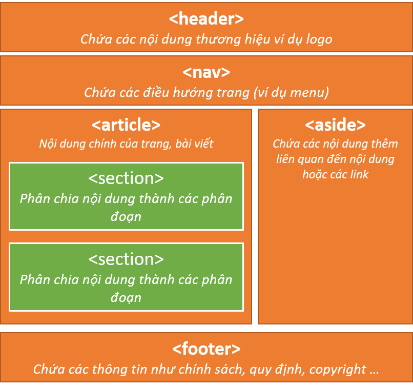
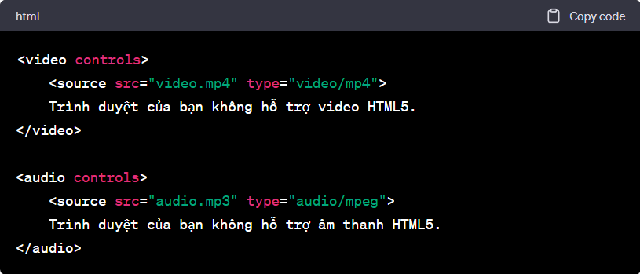
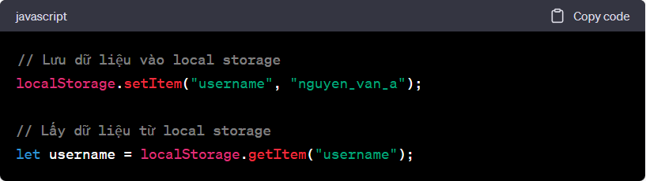
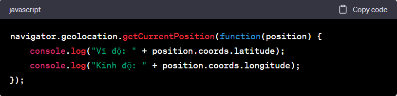

1.Giới thiệu về HTML5
HTML5 không chỉ là phiên bản mới của HTML, mà còn mang lại những khả năng mới cho lập trình web. Điều này bao gồm các thẻ mới, API và tính năng đa phương tiện. Trong blog này, chúng tôi sẽ đi sâu vào những tính năng quan trọng này và cách chúng có thể tối ưu hóa trải nghiệm người dùng.Tìm hiểu về cấu trúc một trang HTML5 với các thành phần như header, article, section, footer, nav
Cấu trúc trang HTML5 thông thường sẽ có dạng được biểu diễn như hình sau: với các thành phần cơ bản header nav article section aside footer

2. Các Tính Năng Nổi Bật của HTML5
a. Đa Phương Tiện

b. Local Storage

c. Geolocation API
